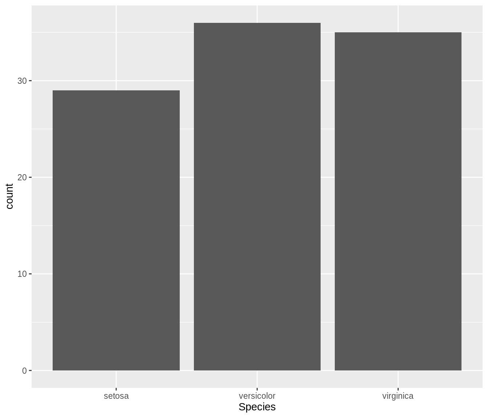
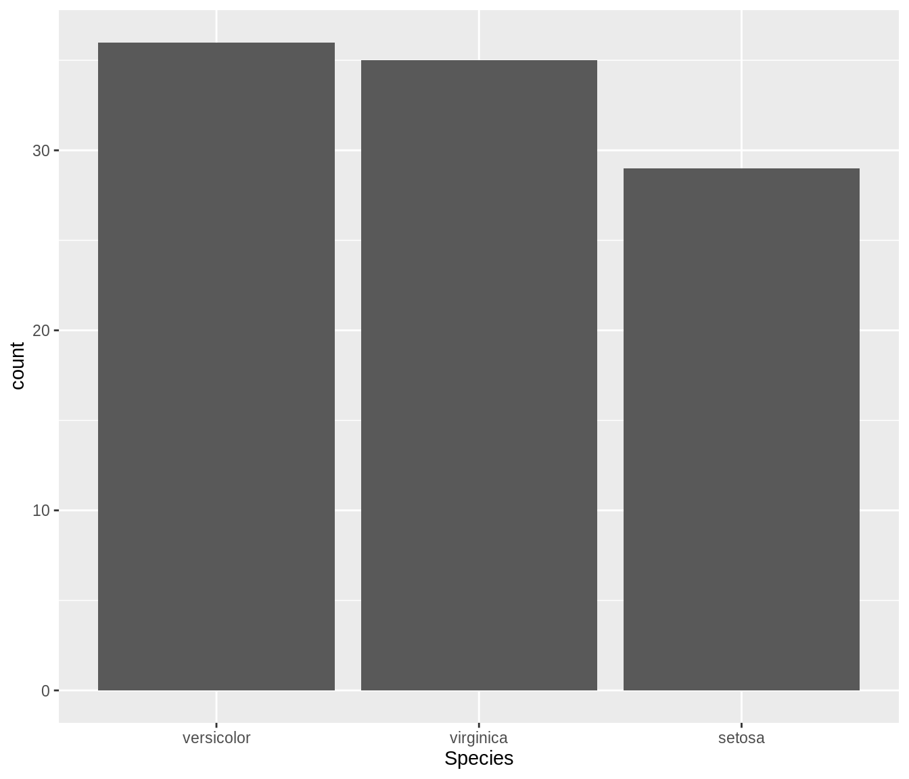

Chapter 6 Working with factors
6.1 Common uses
Within the department there are three main ways you are likely to make use of factors:
- Tabulation of data (in particular when you want to illustrate zero occurences of a particular value)
- Ordering of data for output (e.g. bars in a graph)
- Statistical models (e.g. in conjunction with
contrastswhen encoding categorical data in formulae)
6.1.1 Tabulation of data
# define a simple character vector
vehicles_observed <- c("car", "car", "bus", "car")
class(vehicles_observed)
#> [1] "character"
table(vehicles_observed)
#> vehicles_observed
#> bus car
#> 1 3
# convert to factor with possible levels
possible_vehicles <- c("car", "bus", "motorbike", "bicycle")
vehicles_observed <- factor(vehicles_observed, levels = possible_vehicles)
class(vehicles_observed)
#> [1] "factor"
table(vehicles_observed)
#> vehicles_observed
#> car bus motorbike bicycle
#> 3 1 0 06.1.2 Ordering of data for output
# example 1
vehicles_observed <- c("car", "car", "bus", "car")
possible_vehicles <- c("car", "bus", "motorbike", "bicycle")
vehicles_observed <- factor(vehicles_observed, levels = possible_vehicles)
table(vehicles_observed)
#> vehicles_observed
#> car bus motorbike bicycle
#> 3 1 0 0
possible_vehicles <- c("bicycle", "bus", "car", "motorbike")
vehicles_observed <- factor(vehicles_observed, levels = possible_vehicles)
table(vehicles_observed)
#> vehicles_observed
#> bicycle bus car motorbike
#> 0 1 3 0
# example 2
df <- iris[sample(1:nrow(iris), 100), ]
ggplot(df, aes(Species)) + geom_bar()
df$Species <- factor(df$Species, levels = c("versicolor", "virginica", "setosa"))
ggplot(df, aes(Species)) + geom_bar()
6.1.3 Statistical models
When building a regression model, R will automatically encode your independent
character variables using contr.treatment contrasts. This means that each
level of the vector is contrasted with a baseline level (by default the first
level once the vector has been converted to a factor). If you want to change
the baseline level or use a different encoding methodology then you need to
work with factors. To illustrate this we use the Titanic dataset.
# load data and convert to one observation per row
data("Titanic")
df <- as.data.frame(Titanic)
df <- df[rep(1:nrow(df), df[ ,5]), -5]
rownames(df) <- NULL
head(df)| Class | Sex | Age | Survived |
|---|---|---|---|
| 3rd | Male | Child | No |
| 3rd | Male | Child | No |
| 3rd | Male | Child | No |
| 3rd | Male | Child | No |
| 3rd | Male | Child | No |
| 3rd | Male | Child | No |
# For this example we convert all variables to characters
df[] <- lapply(df, as.character)
# save to temporary folder
filename <- tempfile(fileext = ".csv")
write.csv(df, filename, row.names = FALSE)
# reload data with stringsAsFactors = FALSE
new_df <- read.csv(filename, stringsAsFactors = FALSE)
str(new_df)
#> 'data.frame': 2201 obs. of 4 variables:
#> $ Class : chr "3rd" "3rd" "3rd" "3rd" ...
#> $ Sex : chr "Male" "Male" "Male" "Male" ...
#> $ Age : chr "Child" "Child" "Child" "Child" ...
#> $ Survived: chr "No" "No" "No" "No" ...First lets see what happens if we try and build a logistic regression model for survivals but using our newly loaded dataframe
model_1 <- glm(Survived ~ ., family = binomial, data = new_df)
#> Error in eval(family$initialize): y values must be 0 <= y <= 1This errors due to the Survived variable being a character vector. Let’s convert it to a factor.
new_df$Survived <- factor(new_df$Survived)
model_2 <- glm(Survived ~ ., family = binomial, data = new_df)
summary(model_2)
#>
#> Call:
#> glm(formula = Survived ~ ., family = binomial, data = new_df)
#>
#> Deviance Residuals:
#> Min 1Q Median 3Q Max
#> -2.0812 -0.7149 -0.6656 0.6858 2.1278
#>
#> Coefficients:
#> Estimate Std. Error z value Pr(>|z|)
#> (Intercept) 2.0438 0.1679 12.171 < 2e-16 ***
#> Class2nd -1.0181 0.1960 -5.194 2.05e-07 ***
#> Class3rd -1.7778 0.1716 -10.362 < 2e-16 ***
#> ClassCrew -0.8577 0.1573 -5.451 5.00e-08 ***
#> SexMale -2.4201 0.1404 -17.236 < 2e-16 ***
#> AgeChild 1.0615 0.2440 4.350 1.36e-05 ***
#> ---
#> Signif. codes: 0 '***' 0.001 '**' 0.01 '*' 0.05 '.' 0.1 ' ' 1
#>
#> (Dispersion parameter for binomial family taken to be 1)
#>
#> Null deviance: 2769.5 on 2200 degrees of freedom
#> Residual deviance: 2210.1 on 2195 degrees of freedom
#> AIC: 2222.1
#>
#> Number of Fisher Scoring iterations: 4This works, but the baseline case for Class is 1st. What if we wanted it
to be 3rd. We would first need to convert the variable to a factor and choose
the appropriate level as a baseline
new_df$Class <- factor(new_df$Class)
levels(new_df$Class)
#> [1] "1st" "2nd" "3rd" "Crew"
contrasts(new_df$Class) <- contr.treatment(levels(new_df$Class), 3)
model_3 <- glm(Survived ~ ., family = binomial, data = new_df)
summary(model_3)
#>
#> Call:
#> glm(formula = Survived ~ ., family = binomial, data = new_df)
#>
#> Deviance Residuals:
#> Min 1Q Median 3Q Max
#> -2.0812 -0.7149 -0.6656 0.6858 2.1278
#>
#> Coefficients:
#> Estimate Std. Error z value Pr(>|z|)
#> (Intercept) 0.2661 0.1293 2.058 0.0396 *
#> Class1st 1.7778 0.1716 10.362 < 2e-16 ***
#> Class2nd 0.7597 0.1764 4.308 1.65e-05 ***
#> ClassCrew 0.9201 0.1486 6.192 5.93e-10 ***
#> SexMale -2.4201 0.1404 -17.236 < 2e-16 ***
#> AgeChild 1.0615 0.2440 4.350 1.36e-05 ***
#> ---
#> Signif. codes: 0 '***' 0.001 '**' 0.01 '*' 0.05 '.' 0.1 ' ' 1
#>
#> (Dispersion parameter for binomial family taken to be 1)
#>
#> Null deviance: 2769.5 on 2200 degrees of freedom
#> Residual deviance: 2210.1 on 2195 degrees of freedom
#> AIC: 2222.1
#>
#> Number of Fisher Scoring iterations: 46.2 Other things to know about factors
Working with factors can be tricky to both the new, and the experienced R
user. This is as their behaviour is not always intuitive. Below we illustrate
three common areas of confusion
6.2.1 Renaming factor levels
my_factor <- factor(c("Dog", "Cat", "Hippo", "Hippo", "Monkey", "Hippo"))
my_factor
#> [1] Dog Cat Hippo Hippo Monkey Hippo
#> Levels: Cat Dog Hippo Monkey
# change Hippo to Giraffe
## DO NOT DO THIS
my_factor[my_factor == "Hippo"] <- "Giraffe"
#> Warning in `[<-.factor`(`*tmp*`, my_factor == "Hippo", value = "Giraffe"):
#> invalid factor level, NA generated
my_factor
#> [1] Dog Cat <NA> <NA> Monkey <NA>
#> Levels: Cat Dog Hippo Monkey
## reset factor
my_factor <- factor(c("Dog", "Cat", "Hippo", "Hippo", "Monkey", "Hippo"))
# change Hippo to Giraffe
## DO THIS
levels(my_factor)[levels(my_factor) == "Hippo"] <- "Giraffe"
my_factor
#> [1] Dog Cat Giraffe Giraffe Monkey Giraffe
#> Levels: Cat Dog Giraffe Monkey6.2.2 Combining factors does not result in a factor
names_1 <- factor(c("jon", "george", "bobby"))
names_2 <- factor(c("laura", "claire", "laura"))
c(names_1, names_2)
#> [1] 3 2 1 2 1 2
# if you want concatenation of factors to give a factor than the help page for
# c() suggest the following method is used:
c.factor <- function(..., recursive=TRUE) unlist(list(...), recursive=recursive)
c(names_1, names_2)
#> [1] jon george bobby laura claire laura
#> Levels: bobby george jon claire laura
# if you only wanted the result to be a character vector then you could also use
c(as.character(names_1), as.character(names_2))
#> [1] "jon" "george" "bobby" "laura" "claire" "laura"6.2.3 Numeric vectors that have been read as factors
Sometimes we find a numeric vector is being stored as a factor (a common occurence when reading a csv from Excel with #N/A values)
# example data set
pseudo_excel_csv <- data.frame(names = c("jon", "laura", "ivy", "george"),
ages = c(20, 22, "#N/A", "#N/A"))
# save to temporary file
filename <- tempfile(fileext = ".csv")
write.csv(pseudo_excel_csv, filename, row.names = FALSE)
# reload data
df <- read.csv(filename)
str(df)
#> 'data.frame': 4 obs. of 2 variables:
#> $ names: Factor w/ 4 levels "george","ivy",..: 3 4 2 1
#> $ ages : Factor w/ 3 levels "#N/A","20","22": 2 3 1 1to transform this to a numeric variable we can proceed as follows
6.3 Helpful packages
If you find yourself having to manipulate factors often, then it may be worth spending some time with the tidyverse package (forcats)[https://forcats.tidyverse.org]. This was designed to make working with factors simpler. There are many tutorials available online but a good place to start is the official (vignette)[https://forcats.tidyverse.org/articles/forcats.html].